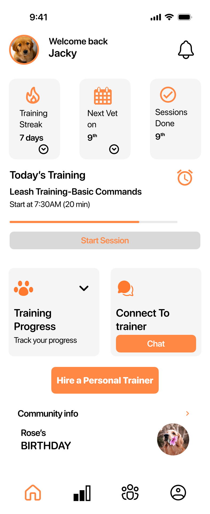
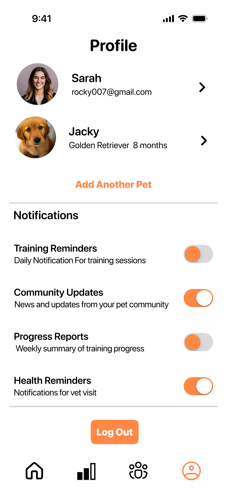
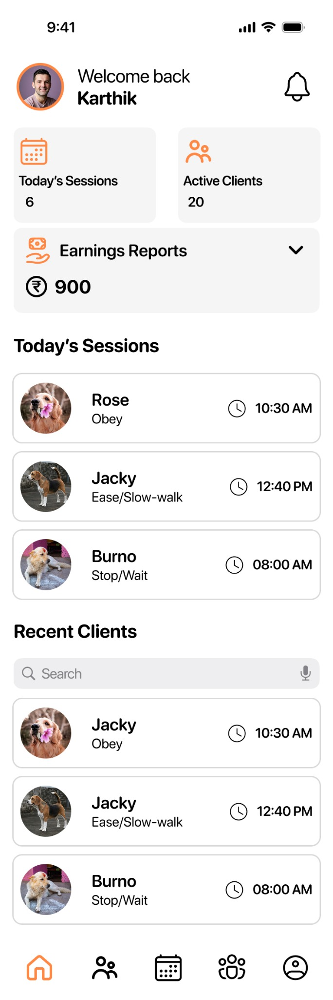
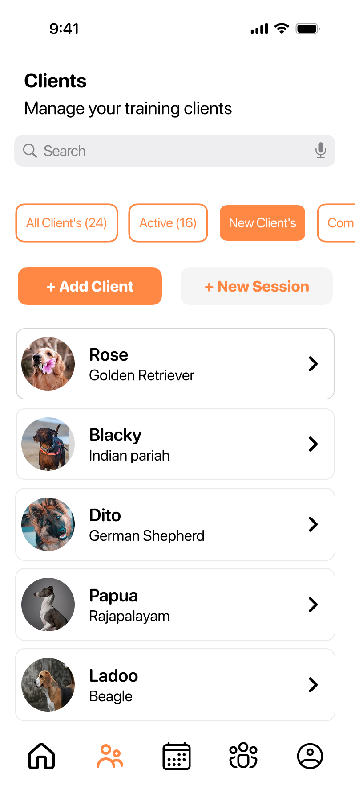
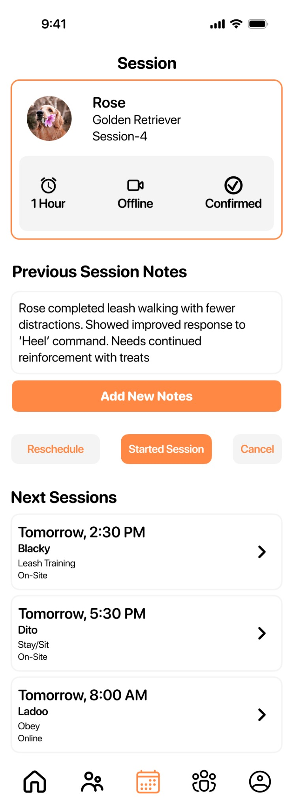
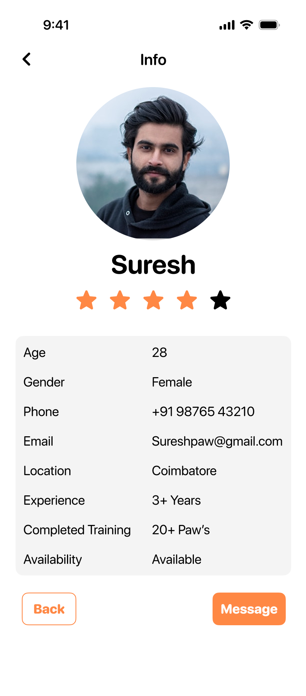
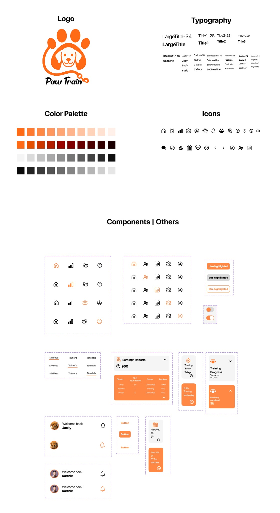

What should I practise next?
Progress, reminders and next steps can be hard to keep consistent between sessions.
UX CASE STUDY · 2025
A connected training experience that helps pet owners build better routines with their dogs and helps trainers manage clients, sessions and progress in one place.

THE OPPORTUNITY
PawTrain gives both sides their own workflows while keeping the training relationship connected.
Pet owners need to remember what to practise. Trainers need to keep track of clients, sessions and progress. When that information is split across messages and memory, continuity gets harder.
Progress, reminders and next steps can be hard to keep consistent between sessions.
Managing schedules, client details and session notes adds overhead to the actual training.
How might we help pet parents stay consistent while giving trainers a simpler way to manage and support their clients?
The project research focused on the points where training loses momentum: understanding progress, remembering what comes next, and keeping owners and trainers aligned.
Training needs to carry on between scheduled sessions, not restart each time.
Owners benefit from clear next steps; trainers need a quick view of each dog's development.
Owner and trainer workflows differ, but both contribute to the same training outcome.
Make upcoming training visible.
Make completed work and goals easier to revisit.
Bring client, session and feedback details together.
Synthesis translated into product opportunities. These are design themes, not quantified research findings.
Surface the next session and current task on the owner home screen.
Give owners a dedicated place to revisit training progress.
Connect pet details, trainer details and session history.
Bring client management and upcoming sessions into one workflow.
Use clear actions, reminders and repeatable training steps.
The owner experience prioritises the next useful action. The trainer experience prioritises a clear view of clients and sessions. Both are designed around continuity rather than isolated screens.
Today's training, progress, pet information and a way to connect with a trainer.
Today's sessions, client list, session details and editable trainer information.
Make the training plan easier to follow on both sides of the relationship.
The screens reflect three practical contexts: a pet owner working through training, a trainer managing clients, and the individual pet or trainer profile that holds supporting information.
See the next activity, follow a training session and review pet details.
Review today's sessions, find clients and maintain trainer information.
Use profile and session views to support the ongoing relationship.
The owner home screen brings immediate priorities forward, while the pet profile keeps individual information close to the training journey.

Trainer-facing screens focus on operational tasks: reviewing the day, locating a client, opening session details and maintaining a professional profile.




A focused session view keeps the current command, time, guidance and next action together, so the owner can concentrate on the activity.

Current command
Keep the exercise and instruction easy to scan.
Progress cue
Show where the user is in the sequence.
Next action
Make continuing or ending the session clear.
A reusable visual language brings consistency to owner and trainer flows. The supplied design system covers brand elements, type styles, colour palettes, icons, buttons, navigation and repeatable UI components.

The paw-and-leash mark and warm orange accent connect the interface to pet care and training.
Large titles, section headings, body text and captions support different reading priorities.
Orange highlights active states and key actions against neutral surfaces.
Navigation, profile rows, metric cards, toggles and buttons are documented for reuse.
It was the connection between two roles. Owner and trainer experiences need different tools, but the shared goal is consistent training over time.
A useful product is more than a set of polished screens. It is a system of decisions that helps people understand what matters, what to do next and how their actions connect.
This case study documents the design direction and interface work shown in the supplied screens. Quantitative outcomes and post-launch metrics were not provided, so no performance claims are made.